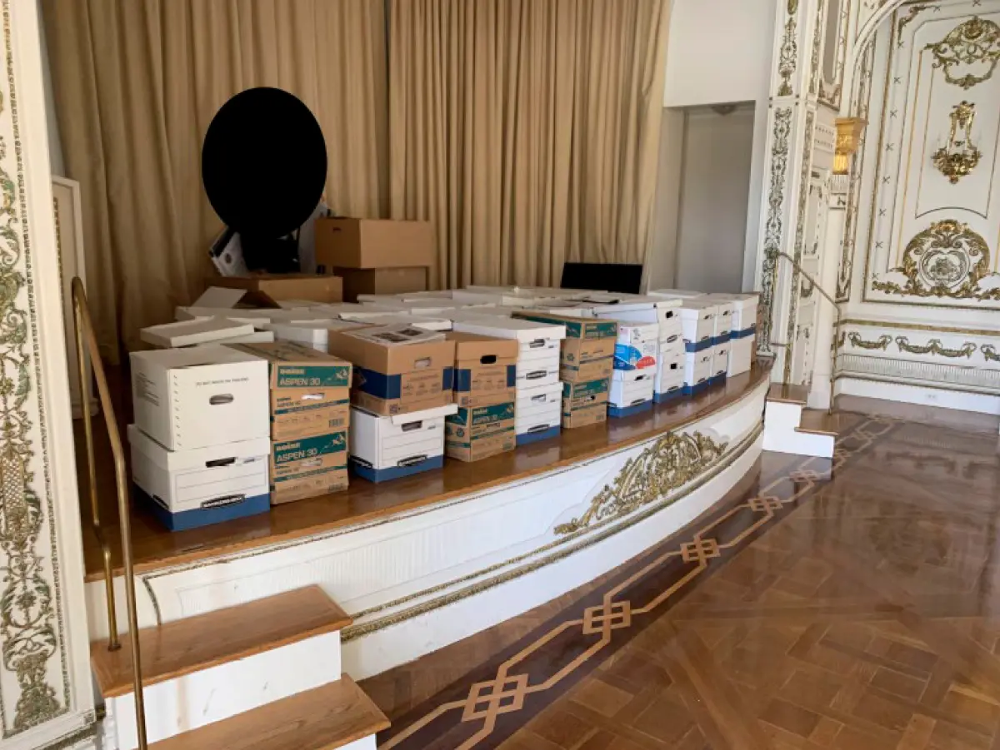

Breaking News
 September 9
September 9
by Morgan Blake
Federal investigators have issued new grand jury subpoenas in an inquiry examining the origins of the Trump-Russia investigation and alleged misconduct by intelligence officials.
The Justice Department has issued new grand jury subpoenas in an investigation looking into the origins of the government’s probe into Russian interference in the 2016 presidential election and whether intelligence officials improperly targeted Donald Trump. The subpoenas represent an escalation of the investigation, moving from voluntary interviews to forced testimony and document production. People familiar with the matter say investigators have been contacting defense attorneys for potential witnesses to let them know subpoenas are coming. The exact number of subpoenas issued was not immediately clear because the investigation is being conducted in private through a grand jury process and the identities of all witnesses who received subpoenas were not immediately released. The investigation centers around claims pushed by Trump and his allies that government officials misused intelligence resources and law enforcement powers in the initial Trump-Russia probe. Investigators are looking into allegations that the previous investigation was politically motivated and involved misconduct by officials in intelligence and national security agencies. The probe is underway in Florida and is part of several Justice Department actions involving Trump-era investigations. Among the probes being examined by the prosecutors are the actions of intelligence officials and the nature of previous federal investigations into Trump and his administration. Use of grand jury subpoenas doesn’t necessarily mean criminal charges will follow. Grand juries are investigatory tools that allow prosecutors to gather evidence, question witnesses under oath and determine if there is enough information to pursue potential charges. The latest development adds another layer to the ongoing political and legal battles over investigations tied to Trump’s presidency. Trump's supporters say the investigation may uncover misconduct by government agencies, while critics have raised concerns that the probe is being politicized.
The present inquiry examines the origins of the probe into Russian meddling in the 2016 election, which has been a major political controversy for years. Investigators are also looking at whether officials involved in intelligence operations or law enforcement acted improperly in evaluating possible links between Russia and Trump’s campaign. The last Russia investigation was conducted by a number of government agencies, including the FBI, and then Special Counsel Robert Mueller’s team. Mueller’s investigation looked at Russian efforts to interfere and possible links involving Trump associates, finding that Russia interfered in the election but did not find a criminal conspiracy between Trump’s campaign and Russia. Trump has repeatedly said the original investigation was politically motivated and an attempt to undermine his presidency. That history is echoed in the current Justice Department inquiry, which focuses on whether officials involved in the investigation abused their authority or acted inappropriately. Former CIA director John Brennan, who has denied any wrongdoing, is among those alleged to be linked to the investigation. Investigators are examining officials involved in intelligence assessments and decisions relating to the Russia inquiry. The probe also reportedly includes questions about the FBI’s 2022 search of Trump’s Mar-a-Lago property that recovered classified documents. The inclusion of that matter indicates that investigators are looking at a wider array of actions involving federal agencies and Trump-related investigations. The scope of the investigation has divided legal experts, political observers. Supporters say a review of potential government misconduct is warranted, but critics say the investigation could be turned into a weapon of political revenge against officials who have been part of past Trump inquiries.
The broadened investigation has fueled debate about the role of the Justice Department and whether federal law enforcement actions are being influenced by political interests. The Trump administration and its allies have contended that prior investigations into Trump amounted to a misuse of government authority. Opponents say the new inquiry could be used to target former officials who were involved in legitimate investigations. Legal experts say investigations that are politically sensitive have to be closely monitored if there is to be any public confidence in the independence of federal law enforcement agencies. The investigation is also attracting attention because of the participation of U.S. District Judge Aileen Cannon, who has previously issued rulings favorable to Trump in litigation arising out of the Mar-a-Lago classified documents case. Critics have questioned her involvement, raising concerns about perceptions of impartiality. But supporters of the probe say government officials should be held accountable if there’s evidence they abused intelligence or law enforcement authorities. They say the grand jury process provides a legal process for looking at the evidence and figuring out if anything illegal happened. The Justice Department has not disclosed if charges or conclusions have resulted from the investigation. Prosecutors are in the midst of gathering information and reviewing witness testimony and documents obtained through subpoenas. The move comes as Trump continues to face a host of political and legal battles over his presidency. The probe into the origins of the Russia probe is a flip of the script, moving the scrutiny away from Trump’s campaign and onto the officials who first launched the investigation.
Grand jury subpoenas are a significant procedural development, but the ultimate result of the investigation is unclear. Prosecutors must determine if the evidence collected warrants possible criminal charges or if the investigation will end without prosecution. Grand juries have wide-ranging powers to compel the production of documents and testimony from witnesses. But being served with a subpoena is not an accusation of criminal wrongdoing. Many witnesses are presented to grand juries only for the purpose of giving information relevant to an investigation. Investigators are expected to keep gathering records and interviewing people tied to intelligence assessments, law enforcement decisions and past investigations involving Trump. The process could take months, with prosecutors poring over complex government documents, witness accounts. The investigation has also revived a debate over how future administrations should deal with politically sensitive law enforcement matters. Critics warn such probes of officials from past administrations could trigger a cycle of retaliation, but supporters say accountability is needed when government power is allegedly abused. For Trump and his allies, the investigation is an opportunity to repeat complaints that he was treated unfairly by federal agencies. Critics say it feeds concerns about whether prosecutorial power is being used to settle political scores. What prosecutors uncover and whether witnesses provide information that changes the direction of the case will determine the next phase of the probe, with subpoenas still being issued. The investigation is still ongoing and no decision has been made on possible charges or consequences.

Morgan Blake is a U.S. investigative journalist specializing in government accountability, corporate misconduct, and public-interest reporting.